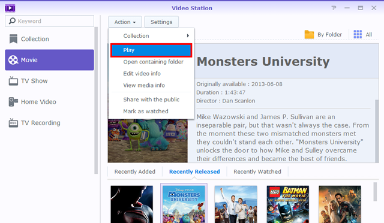

Vue d'ensemble
Avec Video Station, vous pouvez facilement organiser et catégoriser vos collections vidéo en différentes bibliothèques par défaut ou personnalisées, afin de trouver la vidéo que vous voulez beaucoup plus efficacement. En outre, la lecture et le partage des vidéos peuvent être tout aussi faciles en quelques simples clics.
1. Installer Video Station
Pour installer Video Station, veuillez aller dans Centre de paquets, trouvez Video Station, puis cliquez sur Installer.

2. Stocker et catégoriser les vidéos dans les bibliothèques par défaut
Video Station fournit trois bibliothèques par défaut comme indiqué sur le panneau de gauche : Film, Émission de télévision et Vidéo personnelle. Pour être sûr que vos vidéos pourront être correctement indexées et classées, vous devez d'abord ajouter des dossiers vidéo pour chaque bibliothèque et stocker vos fichiers dans les dossiers vidéo correspondants. Par défaut, trois dossiers vidéo ont été créés dans le dossier partagé video pour les trois bibliothèques par défaut : film, émission de télévision et vidéo personnelle. Cependant, en plus de ces trois dossiers, vous pouvez également procéder comme suit pour ajouter d'autres dossiers vidéo pour les bibliothèques.
Le système recherche automatiquement les métadonnées associées et d'autres informations (par exemple, l'image de l'affiche) pour deux types de vidéo (film et émission de télévision) sur Internet. Ainsi, pour assurer que vos vidéos pourront être associées avec les informations correctes, il est fortement recommandé que les vidéos correspondent au type de vidéo spécifié de leurs bibliothèques respectives.
Ajouter des dossiers vidéo pour les bibliothèques par défaut
- Allez à Paramètres > Bibliothèque.
- Cliquez sur Créer > Ajouter un dossier pour choisir un dossier de votre NAS Synology, et sélectionnez la bibliothèque de destination. Vous pouvez ajouter jusqu'à 100 dossiers vidéo pour une bibliothèque, mais une fois un dossier sélectionné, le dossier et ses sous-dossiers ne peuvent plus être sélectionnés pour une autre bibliothèque.
- Stockez les fichiers vidéo dans les dossiers vidéo pour catégoriser les vidéos dans les bibliothèques correspondantes.
- Maintenant, vous pouvez parcourir et regarder vos vidéos désirées depuis les bibliothèques !


3. Stocker et catégoriser les vidéos dans les bibliothèques personnalisées
En plus des trois bibliothèques par défaut qui peut être accédées par n'importe qui par défaut, vous en tant que admin DSM, ou les utilisateurs appartenant au groupe administrators, pouvez également créer des bibliothèques personnalisées et affecter des permissions d'accès aux utilisateurs.
3.1 Créer des bibliothèques personnalisées
- Allez à Paramètres > Bibliothèque, et cliquez sur Créer > Créer une bibliothèque.
- Spécifiez un nom pour la nouvelle bibliothèque, sélectionnez le type de vidéos que vous voulez mettre dans le dossier, puis choisissez Public si vous souhaitez que la bibliothèque soit accessible à tous, ou choisissez Privé pour limiter l'accès à certains utilisateurs qui ont la permission. Veuillez noter que les vidéos que vous placez dans le dossier doivent correspondre au type sélectionné ici pour assurer l'exactitude des informations vidéo recueillies à partir d'Internet.
- Si vous choisissez Privé, cliquez sur Affecter des permissions et cochez les cases pour accorder l'accès aux utilisateurs.

3.2 Ajouter des dossiers vidéo pour les bibliothèques personnalisées
- Allez à Paramètres > Bibliothèque.
- Cliquez sur Créer > Ajouter un dossier pour choisir un dossier de votre NAS Synology, et sélectionnez la bibliothèque de destination. Vous pouvez ajouter jusqu'à 100 dossiers vidéo à une bibliothèque, mais une fois un dossier sélectionné, le dossier et ses sous-dossiers ne peuvent plus être sélectionnés pour une autre bibliothèque.
- Stockez les fichiers vidéo dans les dossiers vidéo pour catégoriser les vidéos dans les bibliothèques correspondantes.
- Maintenant, vous pouvez parcourir et regarder vos vidéos désirées depuis les bibliothèques !
4. Lire les vidéos
Une fois que vous avez catégorisé vos fichiers vidéo dans différentes bibliothèques, vous pouvez suivre les étapes ci-dessous pour lire vos vidéos sur Video Station. Il est fortement recommandé d'installer d'abord le lecteur multimédia VLC (Windows, Linux) sur votre ordinateur. En plus de lire les vidéos sur votre ordinateur local, vous pouvez également diffuser vos vidéos vers les DMA compatibles DLNA/UPnP ou appareils AirPlay pour la lecture vidéo.
Lire les vidéos avec le lecteur vidéo intégré
- Sélectionnez un clip vidéo que vous voulez lire, puis cliquez sur l'icône de lecture sur l'image vidéo, ou cliquez sur Action > Lire. 
- La vidéo devrait commencer à être lue immédiatement. Si cela n'est pas le cas, assurez-vous que le format de votre vidéo est pris en charge par votre navigateur Web, ou que vous avez installé le plug-in VLC sur votre ordinateur.
- Utilisez les boutons et la barre de progression sur l'écran en bas du lecteur vidéo en fonction de votre besoin. Vous pouvez également régler le volume, sélectionner la qualité de la lecture vidéo et la piste audio, activer les sous-titres ou diffuser la vidéo à un autre appareil (si applicable).

Pour des informations détaillées sur le plug-in VLC et les appareils pris en charge, reportez-vous à Aide de DSM > Video Station > Lecture vidéo.
5. Partager les vidéos avec le public
Avec la fonction de partage public, vous pouvez facilement partager vos vidéos avec d'autres personnes en utilisant Video Station. Toutes les vidéos partagées sont publiquement accessibles par n'importe qui avec le lien, et peuvent être gérées sur la page Collection.
Partager les vidéos avec d'autres
- Allez dans n'importe quelle vidéothèque et cliquez sur Tous dans le coin en haut à droite pour afficher toutes les vidéos dans cette bibliothèque.
- Cliquez sur l'icône Mode de sélection, ou appuyez et maintenez la touche Ctrl ou Maj pour sélectionner plusieurs vidéos. Puis cliquez sur Action > Partager avec le public.
- Si vous avez sélectionné une seule vidéo à partager, la vidéo sera ajoutée à une collection partagée nommée Vidéos partagées. Elle vous permet de gérer toutes les vidéos que vous avez partagées une par une.
- Si vous avez sélectionné plusieurs vidéos à partager, les vidéos seront groupées dans une nouvelle collection partagée.
- Vous pouvez également cliquer Action > Collection pour ajouter les vidéos sélectionnées à une collection partagée existante (si applicable).
- Spécifiez une période de validité si nécessaire.
- Il suffit de copier et coller le lien dans les e-mails, messages instantanés, et pages Web pour partager les vidéos avec tout le monde.

6. Organiser et regarder les vidéos sur les appareils mobiles
Pour connecter à Video Station via des appareils mobiles, vous pouvez télécharger DS video avec les appareils iOS/Android ou Windows Phone avec les codes QR ci-dessous pour lire les vidéos et organiser vos collections sur vos appareils mobiles, ou diffuser les vidéos sur vos DMA ou appareils AirPlay à la fois à la maison ou en déplacement.